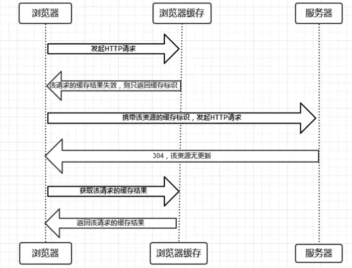

浏览器缓存详解
利用周末，完整地整理了浏览器中缓存的机制和使用的相关知识。
前言
缓存可以说是性能优化中简单高效的一种优化方式了。一个优秀的缓存策略可以缩短网页请求资源的距离，减少延迟，并且由于缓存文件可以重复利用，还可以减少带宽，降低网络负荷。
基本的网络请求就是三个步骤：请求，处理，响应。前端缓存是在“请求”和“响应”中进行。在“请求”步骤中，浏览器也可以通过存储结果的方式直接使用资源，直接省去了发送请求；而“响应”步骤需要浏览器和服务器共同配合，减少响应内容来缩短传输时间。
缓存过程分析
浏览器与服务器通信的方式为应答模式，即是：浏览器发起HTTP请求 – 服务器响应该请求。那么浏览器第一次向服务器发起该请求后拿到请求结果，会根据响应报文中HTTP头的缓存标识，决定是否缓存结果，是则将请求结果和缓存标识存入浏览器缓存中，简单的过程如下图：
由上图我们可以知道：
浏览器每次发起请求，都会先在浏览器缓存中查找该请求的结果以及缓存标识
浏览器每次拿到返回的请求结果都会将该结果和缓存标识存入浏览器缓存中
上面两点结论是浏览器缓存机制的关键，浏览器缓存表示浏览器缓存的位置，对应的 Service Worker、Memory Cache、Disk Cache和Push Cache。这种不向浏览器发送请求的机制是强制缓存，而浏览器缓存失效则使用协商缓存，这一部分将在缓存机制中讨论。
缓存位置
浏览器的缓存位置可以分为四种，并且各自拥有优先级，浏览器发送请求时候依次寻找，找到则返回；找不到则发送网络请求。
Service Worker
Memory Cache
Disk Cache
Push Cache
1. Service Worker
Service Worker 是运行在浏览器背后的独立线程，一般可以用来实现缓存功能。使用 Service Worker的话，传输协议必须为 HTTPS。因为 Service Worker 中涉及到请求拦截，所以必须使用 HTTPS 协议来保障安全。Service Worker 的缓存与浏览器其他内建的缓存机制不同，它可以让我们自由控制缓存哪些文件、如何匹配缓存、如何读取缓存，并且缓存是持续性的。
Service Worker 实现缓存功能一般分为三个步骤：首先需要先注册 Service Worker，然后监听到 install 事件以后就可以缓存需要的文件，那么在下次用户访问的时候就可以通过拦截请求的方式查询是否存在缓存，存在缓存的话就可以直接读取缓存文件，否则就去请求数据。
Service Worker 能够操作的缓存是有别于浏览器内部的 memory cache 或者 disk cache 的。我们可以从 Chrome 的 F12 中，Application -> Cache Storage 找到这个单独的“小金库”。除了位置不同之外，这个缓存是永久性的，即关闭 TAB 或者浏览器，下次打开依然还在(而 memory cache 不是)。有两种情况会导致这个缓存中的资源被清除：手动调用 API cache.delete(resource) 或者容量超过限制，被浏览器全部清空。
当 Service Worker 没有命中缓存的时候，我们需要去调用 fetch 函数获取数据。也就是说，如果我们没有在 Service Worker 命中缓存的话，会根据缓存查找优先级去查找数据。但是不管我们是从 Memory Cache 中还是从网络请求中获取的数据，浏览器都会显示我们是从 Service Worker 中获取的内容。
2. Memory Cache
Memory Cache 也就是内存中的缓存, 主要包含的是当前文档中页面中已经抓取到的资源。例如页面上已经下载的样式、脚本、图片等。我们不排除页面可能会对这些资源再次发出请求，所以这些资源都暂存在内存中，关闭网页时，内存缓存的资源会被释放掉。 由于计算机内存空间有限，页面能使用的最大内存也是有限的。
关于请求资源如何进入 Memory Cache, 可以细分为两块：
preloader。浏览器在加载网页的时候，会先请求 HTML 然后解析。之后如果浏览器发现了 js, css 等需要解析和执行的资源时，它会使用 CPU 资源对它们进行解析和执行。preloader 负责缓存请求加载的网络资源，将这些资源放入 Memory Cache 中。
preload。例如
<link rel="preload">，显式指定的预加载资源，会被放入 Memory Cache 中。
Memory Cache 机制保证了一个页面如果有两个相同的请求，资源最多被请求一次。在匹配缓存时，除了 URL 匹配外，还需要考虑对它们的类型、CORS中的域名规则等。例如：一个作为脚本(script)的资源，图片(image)类型的是不能直接使用缓存文件的。
在从 Memory Cache 获取缓存内容时，浏览器会忽视例如 max-age=0, no-cache 等头部配置，因为 Memory Cache 是短期存储，相当于仅当次浏览有效。头部设置为 no-store ，则即便是 memory cache 也不会存储。
3. Disk Cache
Disk Cache是存储在硬盘上的缓存，因此它是持久存储的，是实际存在于文件系统中的。而且它允许相同的资源在跨会话，甚至跨站点的情况下使用，例如两个站点都使用了同一张图片。
在所有浏览器缓存中，Disk Cache 覆盖面基本是最大的。它会根据 HTTP Header 中的字段判断哪些资源需要缓存，哪些资源可以不请求直接使用，哪些资源已经过期需要重新请求。并且即使在跨站点的情况下，相同地址的资源一旦被硬盘缓存下来，就不会再次去请求数据。绝大部分的缓存都来自 Disk Cache，关于 HTTP 的协议头中的缓存字段，我们会在下文进行详细介绍。
4. Push Cache
Push Cache（推送缓存）是 HTTP/2 中的内容，当以上三种缓存都没有命中时，它才会被使用。它只在会话（Session）中存在，一旦会话结束就被释放，并且缓存时间也很短暂，在Chrome浏览器中只有5分钟左右，同时它也并非严格执行HTTP头中的缓存指令。
Push Cache 在国内能够查到的资料很少，也是因为 HTTP/2 在国内不够普及。这里推荐阅读Jake Archibald的 HTTP/2 push is tougher than I thought 这篇文章，文章中的几个结论：
- 所有的资源都能被推送，并且能够被缓存,但是 Edge 和 Safari 浏览器支持相对比较差
- 可以推送 no-cache 和 no-store 的资源
- 一旦连接被关闭，Push Cache 就被释放
- 多个页面可以使用同一个HTTP/2的连接，也就可以使用同一个Push Cache。这主要还是依赖浏览器的实现而定，出于对性能的考虑，有的浏览器会对相同域名但不同的tab标签使用同一个HTTP连接。
- Push Cache 中的缓存只能被使用一次
- 浏览器可以拒绝接受已经存在的资源推送
- 你可以给其他域名推送资源
如果以上四种缓存都没有命中的话，那么只能发起请求来获取资源了。
缓存机制
浏览器缓存策略是相对于 Disk Cache 来讲的，主要包括了强制缓存和协商缓存。
强制缓存
强制缓存的含义是，客户端需要发送请求的时候，会先访问客户端缓存数据库检查缓存是否存在。如果存在则直接返回缓存；不存在则请求服务器，响应后再写入缓存数据库。
强制缓存直接减少请求数，是提升最大的缓存策略。强缓存可以通过设置两种 HTTP Header 实现：Expires 和 Cache-Control。
Expires
EXpires 是 HTTP 1.0 的字段，表示缓存到期时间，是一个绝对的时间 (当前时间+缓存时间)，如
1 | expires: Sun, 26 Apr 2020 15:39:32 GMT |
在响应消息头中，设置这个字段之后，就可以告诉浏览器，在未过期之前不需要再次请求。Expires 受限于用户可能将本地时间修改，导致缓存失效。时差、误差等因素也会导致缓存失效。
Cache-control
在HTTP/1.1中，Cache-Control是最重要的规则，主要用于控制网页缓存。比如当Cache-Control:max-age=300 时，则代表在这个请求正确返回时间（浏览器也会记录下来）的5分钟内再次加载资源，就会命中强缓存。
Cache-Control 指令包含：
| 指令 | 作用 |
|---|---|
public |
响应可以被客户端和代理服务器缓存 |
private |
响应只可以被客户端缓存 |
max-age=30 |
缓存30s后过期，需要重新请求 |
s-maxage=30 |
覆盖 max-age，作用一样，只在代理服务器中生效 |
no-store |
不缓存任何响应 |
no-cache |
资源被缓存，但是下次会发起请求验证资源是否过期 |
max-state=30 |
30s内，即使缓存过期，也使用该缓存 |
max-fresh |
希望在30s内获取最新响应 |
must-revalidate |
如果超过了 max-age 的时间，浏览器必须向服务器发送请求，验证资源是否还有效。 |
这些值可以混合使用，例如 Cache-control:public, max-age=2592000。在混合使用时，它们的优先级如下图:
Cache-control 的优先级高于 Expires，为了兼容 HTTP/1.0 和 HTTP/1.1，实际项目中两个字段我们都会设置。
协商缓存
当强制缓存失效(超过规定时间)时，就需要使用协商缓存，由服务器决定缓存内容是否失效。
主要有两种情况：
协商缓存生效，返回
304和Not Modifiedforce-control协商缓存失效，返回200和请求结果
 negotiated-control
negotiated-control

{kind=link}
{kind=link}
{kind=link}
{kind=link}
对比缓存在请求数上和没有缓存是一致的，但如果是 304 的话，返回的仅仅是一个状态码而已，并没有实际的文件内容，因此 在响应体体积上的节省是它的优化点。协商缓存可以通过设置两种 HTTP Header 实现：Last-Modified 和 ETag 。
Last-Modified和If-Modified-Since
- 服务器通过 Last-Modified 字段告知客户端，资源最后一次被修改的时间，例如
1 | Last-Modified: Sun, 26 Apr 2020 15:39:32 GMT |
浏览器将这个值和内容一起记录在缓存数据库中。
下一次请求相同资源时时，浏览器从自己的缓存中找出“不确定是否过期的”缓存。因此在请求头中将上次的
Last-Modified的值写入到请求头的If-Modified-Since字段。服务器会将
If-Modified-Since的值与Last-Modified字段进行对比。如果相等，则表示未修改，响应304；反之，则表示修改了，响应200状态码，并返回数据。
但是 Last-Modified 有一定缺陷的：
- 如果资源更新的速度是秒以下单位，那么该缓存是不能被使用的，因为它的时间单位最低是秒。
- 如果文件是通过服务器动态生成的，那么该方法的更新时间永远是生成的时间，尽管文件可能没有变化，所以起不到缓存的作用。
Etag & If-None-Match
Etag是服务器响应请求时，返回当前资源文件的一个唯一标识(由服务器生成)，只要资源有变化，Etag就会重新生成。Etag 存储的是文件的特殊标识(一般都是 hash 生成的)，服务器存储着文件的 Etag 字段。之后的流程和 Last-Modified 一致，只是 Last-Modified 字段和它所表示的更新时间改变成了 Etag 字段和它所表示的文件 hash，把 If-Modified-Since 变成了 If-None-Match。服务器同样进行比较，命中返回 304, 不命中返回新资源和 200。
Etag 的优先级高于 Last-Modified
浏览器行为
用户在浏览器如何操作，会触发哪种缓存策略，主要有三种：
打开网页，地址栏输入地址： 查找 Disk Cache 中是否有匹配。如有则使用；如没有则发送网络请求。
普通刷新 (F5)：因为 TAB 页面并没有关闭，因此 Memory Cache 是可用的，会被优先使用(如果匹配的话)。其次才是 Disk Cache。
强制刷新 (Ctrl + F5)：浏览器不使用缓存，因此发送的请求头部均带有
Cache-control: no-cache(为了兼容，还带了Pragma: no-cache)。服务器直接返回 200 和最新内容。
缓存的应用模式
模式1: 不常变化的资源
Cache-Control: max-age=31536000
处理这类资源的时候，给它们的 Cache-Control 配置一个很大的 max-age=31536000 (一年)，这样浏览器之后请求相同的 URL 会命中强制缓存。为了解决更新问题，需要在文件名(或者路径)中添加hash、版本号等动态字符，通过更改动态字符，达到更改引用 URL 让之前的强制缓存失效(其实并未立即失效，只是不再使用了而已)。
在线提供的类库 (如 jquery-3.3.1.min.js, lodash.min.js 等) 均采用这个模式。如果配置中还增加 public 的话，CDN 也可以缓存起来，效果拔群。
模式2: 经常变化的资源
Cache-Control: no-cache
这类资源的特点是：URL不能变化，但内容可以(且经常)变化。我们可以设置 Cache-Control: no-cache 来迫使浏览器每次请求都必须找服务器验证资源是否有效。
既然提到了验证，就必须 ETag 或者 Last-Modified 出场。这些字段都会由专门处理静态资源的常用类库(例如 koa-static)自动添加，无需开发者过多关心。
也正如上文中提到协商缓存那样，这种模式下，节省的并不是请求数，而是请求体的大小。所以它的优化效果不如模式 1 来的显著。
模式3(反例): 对变化的资源添加较短的max-age
Cache-Control: must-revalidate, max-age=600
也许有的开发者看完模式1和2，会想自己的应用时效性不强，又不想做过于长久的强制缓存，想配置 must-revalidate, max-age=600 的折中方案。
表面上看这很美好：资源可以缓存 10 分钟，10 分钟内读取缓存，10 分钟后和服务器进行一次验证，集两种模式之大成，但实际线上暗存风险。因为上面提过，浏览器的缓存有自动清理机制，开发者并不能控制。
举个例子：当我们有 3 种资源： index.html, index.js, index.css。我们对这 3 者进行上述配置之后，假设在某次访问时，index.js 已经被缓存清理而不存在，但 index.html, index.css 仍然存在于缓存中。这时候浏览器会向服务器请求新的 index.js，然后配上老的 index.html, index.css 展现给用户。这其中的风险显而易见：不同版本的资源组合在一起，报错是极有可能的结局。
除了自动清理引发问题，不同资源的请求时间不同也能导致问题。例如 A 页面请求的是 A.js 和 all.css，而 B 页面是 B.js 和 all.css。如果我们以 A -> B 的顺序访问页面，势必导致 all.css 的缓存时间早于 B.js。那么以后访问 B 页面就同样存在资源版本失配的隐患。
参考引用
- 本文标题：浏览器缓存详解
- 本文作者：hddhyq
- 本文链接：https://hddhyq.github.io/2020/04/26/browser-cache-control/
- 版权声明：本博客所有文章除特别声明外，均采用 CC BY-NC-SA 4.0 许可协议。转载请注明出处！